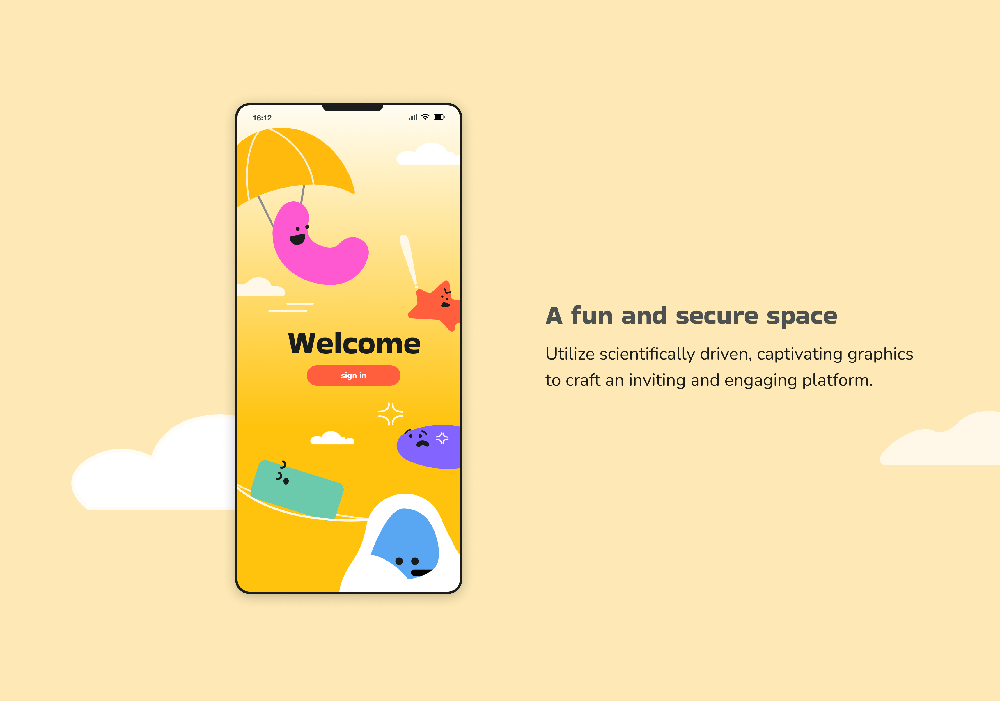
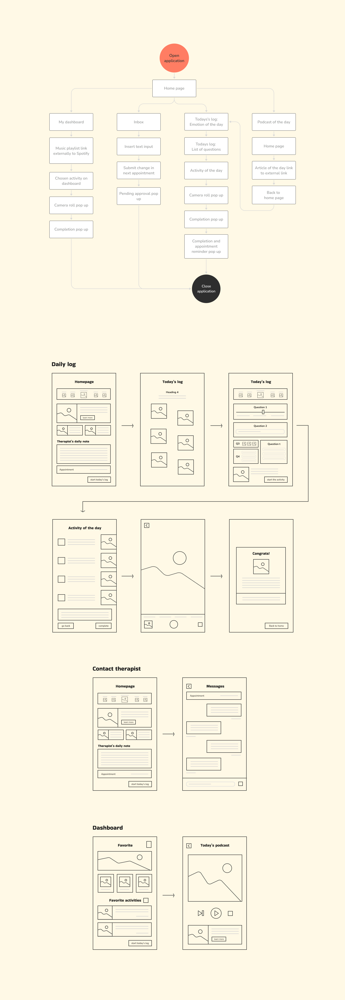
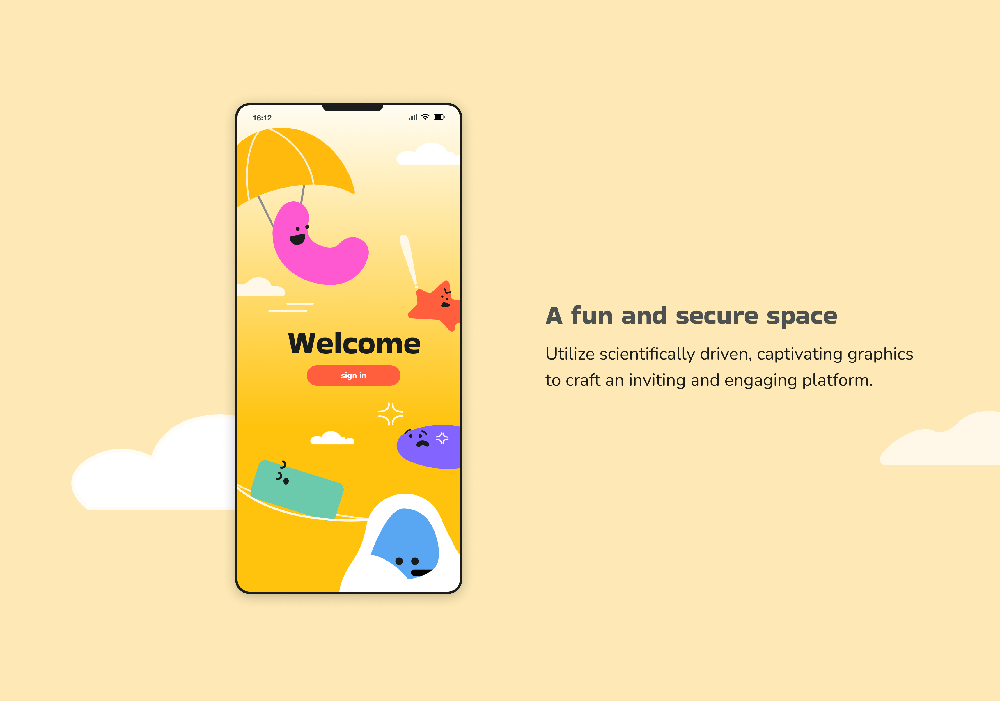
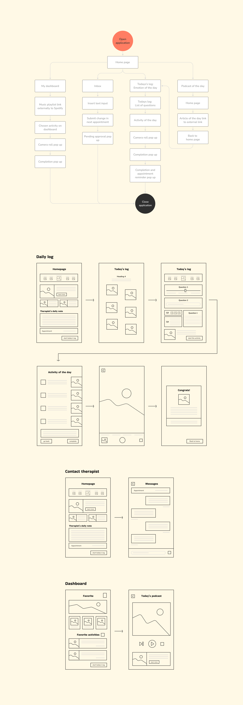
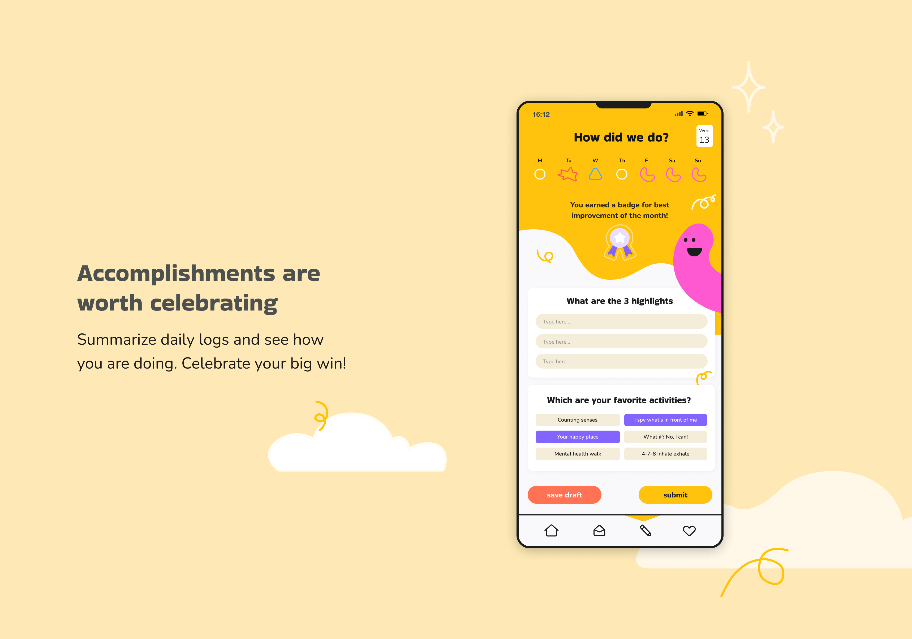
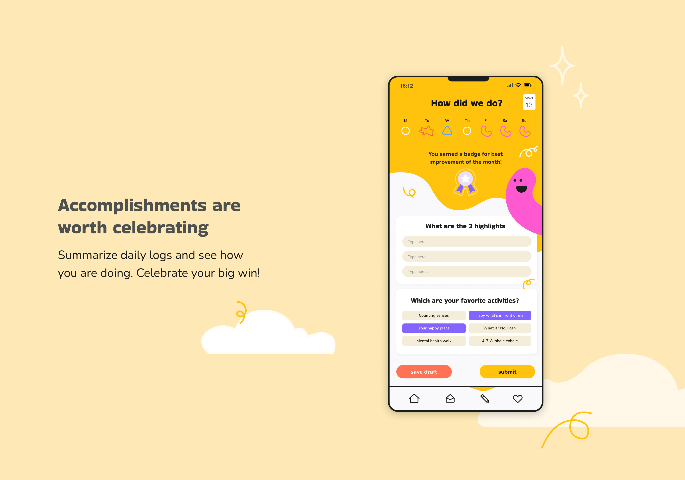

02
HappyHearts: Therapy App
UI design
Mobile App
Education
Health & wellness
A lot of children do not have the resources and have a hard time understanding and expressing their feelings. Having a healthy mind starts from when we are kids. This app is all about helping young minds and their therapists team up, it is like a trusty sidekick, making it easy to share thoughts with user’s therapist. Journalling has been proven to help with mental health, but what about in this era with digital screens? Therapists can really get what's going on with their little clients, see how they are doing, and figure out how to make things even better.
 




 
